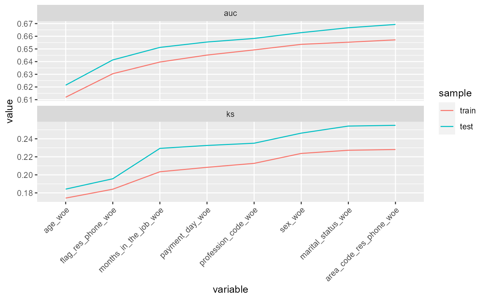
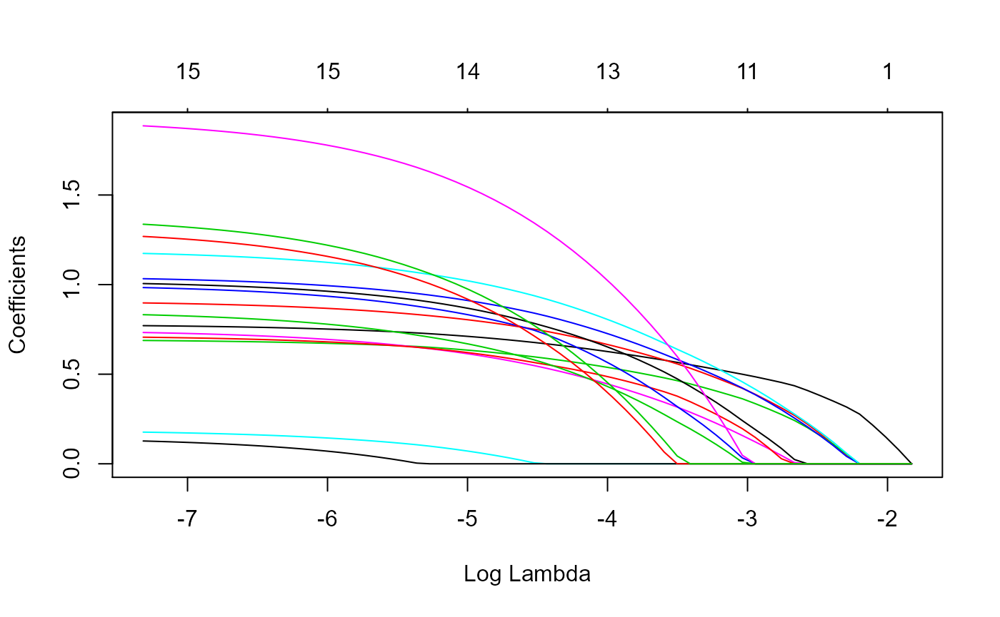
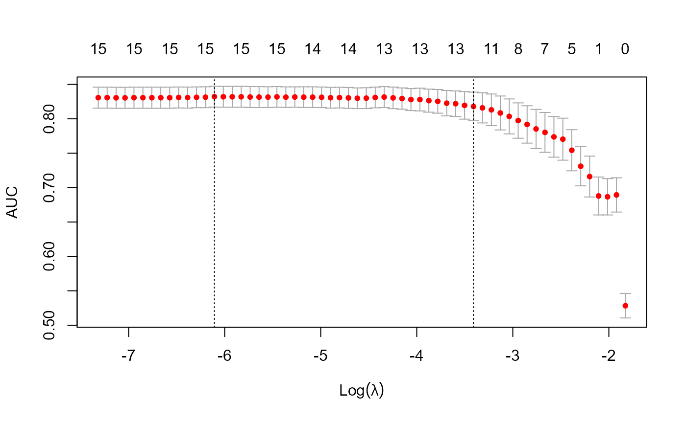
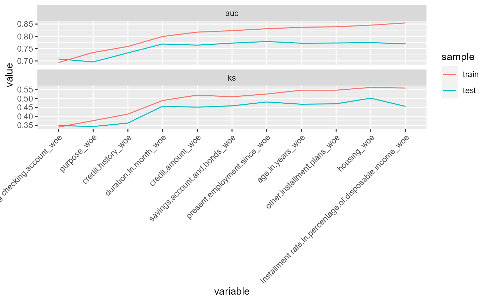

risk3r.RmdYou can also embed plots, for example:
##
## Attaching package: 'dplyr'## The following objects are masked from 'package:stats':
##
## filter, lag## The following objects are masked from 'package:base':
##
## intersect, setdiff, setequal, union## Rows: 49,694
## Columns: 17
## $ id_client <dbl> 1, 7, 9, 12, 14, 19, 22, 26, 28, 30, 32, 35, 36, 3~
## $ sex <chr> "F", "F", "F", "F", "M", "F", "M", "M", "F", "F", ~
## $ marital_status <chr> "O", "S", "S", "C", "C", "V", "C", "S", "D", "S", ~
## $ age <dbl> 44, 22, 27, 32, 36, 46, 17, 20, 71, 46, 23, 23, 27~
## $ flag_res_phone <chr> "N", "Y", "Y", "Y", "Y", "N", "N", "Y", "Y", "Y", ~
## $ area_code_res_phone <dbl> 31, 31, 31, 31, 31, 50, 50, 50, 31, 31, 31, 50, 31~
## $ payment_day <dbl> 12, 12, 20, 12, 12, 12, 12, 12, 18, 8, 18, 12, 23,~
## $ residence_type <chr> "P", "A", "A", "P", "P", "P", "A", "P", "A", "P", ~
## $ months_in_residence <dbl> 12, 0, 0, 24, 120, 360, 12, 12, 96, 72, 276, 36, 2~
## $ months_in_the_job <dbl> 48, 48, 0, 0, 36, 120, 12, 24, 12, 12, 0, 24, 12, ~
## $ profession_code <dbl> 731, 999, 950, 165, 15, 704, 38, 39, 13, 801, 999,~
## $ flag_other_card <chr> "N", "N", "N", "N", "N", "N", "N", "N", "N", "N", ~
## $ flag_mobile_phone <chr> "N", "N", "N", "N", "N", "N", "N", "N", "N", "N", ~
## $ flag_contact_phone <chr> "N", "N", "N", "N", "N", "N", "N", "N", "N", "N", ~
## $ personal_net_income <dbl> 300, 410, 1000, 700, 1987, 520, 426, 285, 180, 442~
## $ quant_add_cards <dbl> 0, 0, 0, 0, 1, 0, 0, 0, 0, 0, 0, 0, 0, 0, 0, 0, 0,~
## $ bad <dbl> 0, 0, 1, 0, 0, 0, 1, 1, 0, 0, 1, 0, 0, 0, 1, 0, 0,~
set.seed(123)
credit <- credit %>%
mutate(
sample = sample(
c("train", "test"),
prob = c(0.5, .5),
size = nrow(credit),
replace = TRUE
)
)
credit %>% count(sample, bad)## # A tibble: 4 x 3
## sample bad n
## <chr> <dbl> <int>
## 1 test 0 20192
## 2 test 1 4929
## 3 train 0 19689
## 4 train 1 4884
dtrain <- credit %>%
filter(sample == "train") %>%
select(-sample, id_client)
bins <- scorecard::woebin(dtrain, y = "bad")## [INFO] creating woe binning ...## Warning in check_const_cols(dt): There were 3 constant columns removed from input dataset,
## flag_other_card, flag_mobile_phone, flag_contact_phone
dbiv <- woebin_summary(bins)
glimpse(dbiv)## Rows: 13
## Columns: 14
## $ variable <chr> "age", "months_in_the_job", "marital_status", "flag~
## $ n_categories <int> 5, 4, 3, 2, 5, 4, 3, 3, 5, 4, 2, 3, 6
## $ iv <dbl> 0.175905407, 0.085626642, 0.077665953, 0.073565141,~
## $ ks <dbl> 0.17420823, 0.12803371, 0.13552635, 0.11075389, 0.0~
## $ hhi <dbl> 0.2000000, 0.2500000, 0.3333333, 0.5000000, 0.20000~
## $ count_distr_max <dbl> 0.3857486, 0.5958165, 0.5103162, 0.8166280, 0.47828~
## $ count_distr_min <dbl> 5.172344e-02, 7.487893e-02, 5.676963e-02, 1.833720e~
## $ has_missing <lgl> FALSE, FALSE, FALSE, FALSE, FALSE, FALSE, FALSE, TR~
## $ has_special_values <lgl> FALSE, FALSE, FALSE, FALSE, FALSE, FALSE, FALSE, TR~
## $ monotone <lgl> TRUE, TRUE, TRUE, TRUE, FALSE, TRUE, TRUE, TRUE, FA~
## $ factor <lgl> FALSE, FALSE, TRUE, TRUE, FALSE, FALSE, FALSE, TRUE~
## $ iv_lbl <fct> medium, weak, weak, weak, weak, weak, weak, weak, w~
## $ hhi_lbl <fct> moderate concentration, moderate concentration, hig~
## $ distribution <chr> "<U+2583><U+2587><U+2583><U+2583><U+2581>", "<U+2587><U+2581><U+2583><U+2582>", "<U+2587><U+2581><U+2587>", "<U+2587><U+2582>", "<U+2581><U+2587><U+2583><U+2582><U+2582>", "<U+2587><U+2582><U+2583><U+2581>", "<U+2581><U+2587><U+2582>~
# bins2 <- woebin2(dtrain, y = "bad", method = "ctree")Remove variables woebin exclude:
Apply woes to train table.
dtrain <- as_tibble(woebin_ply(dtrain, bins))## [INFO] converting into woe values ...
dtest <- credit %>%
filter(sample == "test") %>%
woebin_ply(bins) %>%
as_tibble()## [INFO] converting into woe values ...
glimpse(dtrain)## Rows: 24,573
## Columns: 14
## $ bad <dbl> 0, 0, 0, 1, 1, 0, 1, 0, 0, 0, 0, 0, 0, 1, 0, 0~
## $ id_client_woe <dbl> -0.03401675, -0.03401675, -0.03401675, -0.0340~
## $ sex_woe <dbl> -0.1097554, -0.1097554, 0.2263878, 0.2263878, ~
## $ marital_status_woe <dbl> 0.2249065, -0.3491578, -0.3491578, -0.3491578,~
## $ age_woe <dbl> 0.1489799, 0.1489799, -0.2478290, 0.5275513, 0~
## $ flag_res_phone_woe <dbl> -0.1416368, -0.1416368, -0.1416368, 0.5225850,~
## $ area_code_res_phone_woe <dbl> -0.06031838, -0.06031838, -0.06031838, 0.29252~
## $ payment_day_woe <dbl> -0.18172112, -0.18172112, -0.18172112, -0.1817~
## $ residence_type_woe <dbl> 0.19733098, -0.04852483, -0.04852483, 0.197330~
## $ months_in_residence_woe <dbl> 0.20871226, 0.09290052, -0.03072071, 0.2087122~
## $ months_in_the_job_woe <dbl> -0.31008349, 0.20251228, -0.08297988, 0.202512~
## $ profession_code_woe <dbl> 0.09649989, 0.04742594, -0.79329749, 0.0474259~
## $ personal_net_income_woe <dbl> 0.123055547, -0.192405105, -0.616509752, 0.123~
## $ quant_add_cards_woe <dbl> 0.04389115, 0.04389115, -0.33022264, 0.0438911~We’ll remove unpredictive variables.
vars <- dbiv %>%
filter(iv > 0.02) %>%
pull(variable) %>%
str_c("_woe")
dtrain <- dtrain %>%
select(bad, all_of(vars))
model <- glm(bad ~ ., data = dtrain, family = binomial(link = logit))
broom::tidy(model)## # A tibble: 10 x 5
## term estimate std.error statistic p.value
## <chr> <dbl> <dbl> <dbl> <dbl>
## 1 (Intercept) -1.40 0.0167 -83.8 0
## 2 age_woe 0.591 0.0500 11.8 3.47e-32
## 3 months_in_the_job_woe 0.623 0.0650 9.59 9.20e-22
## 4 marital_status_woe 0.332 0.0674 4.93 8.22e- 7
## 5 flag_res_phone_woe 0.692 0.0659 10.5 8.94e-26
## 6 profession_code_woe 0.552 0.0744 7.42 1.19e-13
## 7 personal_net_income_woe 0.0172 0.0986 0.174 8.62e- 1
## 8 area_code_res_phone_woe 0.463 0.0961 4.82 1.43e- 6
## 9 sex_woe 0.788 0.104 7.56 4.06e-14
## 10 payment_day_woe 0.879 0.105 8.35 6.91e-17
model_metrics(model)## # A tibble: 1 x 4
## ks auc iv gini
## <dbl> <dbl> <dbl> <dbl>
## 1 0.229 0.657 0.305 0.314
model_metrics(model, newdata = dtest)## # A tibble: 1 x 4
## ks auc iv gini
## <dbl> <dbl> <dbl> <dbl>
## 1 0.255 0.669 0.345 0.339We can do feature selection:
model_fsglmnet <- featsel_glmnet(model, trace = FALSE)
broom::tidy(model_fsglmnet)## # A tibble: 9 x 5
## term estimate std.error statistic p.value
## <chr> <dbl> <dbl> <dbl> <dbl>
## 1 (Intercept) -1.40 0.0167 -83.8 0
## 2 age_woe 0.592 0.0494 12.0 4.02e-33
## 3 flag_res_phone_woe 0.694 0.0653 10.6 2.40e-26
## 4 months_in_the_job_woe 0.625 0.0633 9.87 5.55e-23
## 5 marital_status_woe 0.333 0.0672 4.96 7.01e- 7
## 6 profession_code_woe 0.552 0.0743 7.42 1.14e-13
## 7 payment_day_woe 0.879 0.105 8.35 7.02e-17
## 8 area_code_res_phone_woe 0.463 0.0961 4.82 1.42e- 6
## 9 sex_woe 0.786 0.103 7.60 2.93e-14
model_metrics(model_fsglmnet)## # A tibble: 1 x 4
## ks auc iv gini
## <dbl> <dbl> <dbl> <dbl>
## 1 0.228 0.657 0.303 0.314
model_metrics(model_fsglmnet, newdata = dtest)## # A tibble: 1 x 4
## ks auc iv gini
## <dbl> <dbl> <dbl> <dbl>
## 1 0.255 0.669 0.343 0.339
model_fsstep <- featsel_stepforward(model, trace = FALSE)
broom::tidy(model_fsstep)## # A tibble: 9 x 5
## term estimate std.error statistic p.value
## <chr> <dbl> <dbl> <dbl> <dbl>
## 1 (Intercept) -1.40 0.0167 -83.8 0
## 2 age_woe 0.592 0.0494 12.0 4.02e-33
## 3 flag_res_phone_woe 0.694 0.0653 10.6 2.40e-26
## 4 months_in_the_job_woe 0.625 0.0633 9.87 5.55e-23
## 5 payment_day_woe 0.879 0.105 8.35 7.02e-17
## 6 profession_code_woe 0.552 0.0743 7.42 1.14e-13
## 7 sex_woe 0.786 0.103 7.60 2.93e-14
## 8 marital_status_woe 0.333 0.0672 4.96 7.01e- 7
## 9 area_code_res_phone_woe 0.463 0.0961 4.82 1.42e- 6
model_metrics(model_fsstep)## # A tibble: 1 x 4
## ks auc iv gini
## <dbl> <dbl> <dbl> <dbl>
## 1 0.228 0.657 0.303 0.314
model_metrics(model_fsstep, newdata = dtest)## # A tibble: 1 x 4
## ks auc iv gini
## <dbl> <dbl> <dbl> <dbl>
## 1 0.255 0.669 0.343 0.339See if we can remove variables via inspecting predictive measures.
dfmetrics <- model_partials(model_fsglmnet, newdata = dtest)
dfmetrics## # A tibble: 16 x 6
## variable sample ks auc iv gini
## <fct> <fct> <dbl> <dbl> <dbl> <dbl>
## 1 age_woe train 0.174 0.612 0.156 0.224
## 2 age_woe test 0.184 0.621 0.174 0.243
## 3 flag_res_phone_woe train 0.184 0.630 0.206 0.261
## 4 flag_res_phone_woe test 0.196 0.641 0.245 0.283
## 5 months_in_the_job_woe train 0.203 0.640 0.240 0.279
## 6 months_in_the_job_woe test 0.229 0.651 0.278 0.302
## 7 marital_status_woe train 0.205 0.641 0.268 0.282
## 8 marital_status_woe test 0.236 0.655 0.307 0.311
## 9 profession_code_woe train 0.213 0.646 0.273 0.291
## 10 profession_code_woe test 0.239 0.659 0.316 0.318
## 11 payment_day_woe train 0.215 0.651 0.279 0.301
## 12 payment_day_woe test 0.244 0.662 0.337 0.325
## 13 area_code_res_phone_woe train 0.219 0.653 0.280 0.305
## 14 area_code_res_phone_woe test 0.249 0.665 0.338 0.330
## 15 sex_woe train 0.228 0.657 0.303 0.314
## 16 sex_woe test 0.255 0.669 0.343 0.339
dfmetrics %>%
# select(-gini, -iv) %>%
risk3r:::plot.model_partials() +
theme(axis.text.x = element_text(angle = 45, hjust = 1))